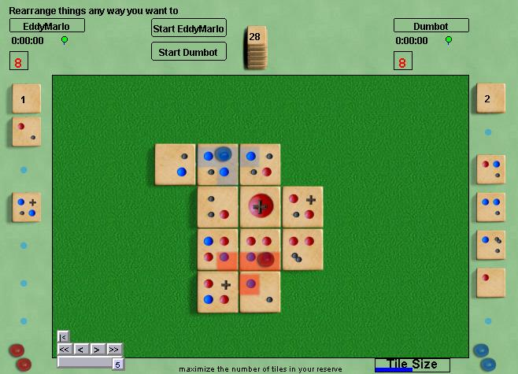

Palago |
|
Spangles |
| Register |
Log
in and
Play |
Guest
Login |
MicropulMicropul uses a set of 48 square tiles, and six transparent Jewels. There's an amusing back story which explains the rationale behind the rules, but the essence of the game is to manage a hand of up to six tiles, optimize placement of the tiles and jewels to collect as many extra tiles and claim as many micropul as possible. Read the official rules for details. Robots: to be determined, but not too bright yet. |
 |
| Micropul rankings at
Boardspace |
Micropul at
BoardGameGeek |
| Micropul game archives
at Boardspace |
Micropul Home Page |
| Micropul win/loss
database |
Micropul
Rules |
|
|
Site Map |
Go to BoardSpace.net home page |